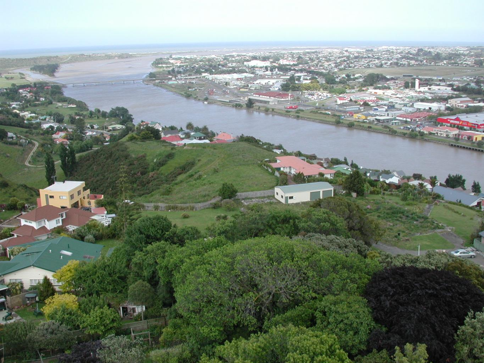

一條河成了法律上的人，誰替它說話？
紐西蘭把旺格努伊河承認為法律主體，接著還得回答：誰能代表它、依什麼準則行動，又怎樣讓不同的用水者一起做決定？
一條河不會簽名，也不會走進會議室。當有人申請在流域內進行一項工程，河的利益要由誰提出？如果每個人都能說「我是為河好」，法律又怎麼辨認，誰有資格以河的名義行動？2017 年，紐西蘭通過《Te Awa Tupua（旺格努伊河請求和解）法》，承認這條河的法律人格。看起來像一句宣言的決定，其實包含一整套相當具體的安排：有人代表、有人協商，還有必須交代的決策理由。

一、法律上的「人」，先是一個能承擔權利的主體
平常說「人」，我們多半想到有身體、有感受的個人。法律使用這個字時，還有另一層意思，也就是權利與義務的主體。公司可以持有財產、簽訂契約，也要承擔責任；它不需要先有一副人的軀體，就能在法律關係中有自己的角色。紐西蘭國會在介紹這部法律時，也用公司等組織說明法律人格（法人）的概念。
法律第 14 條決定了兩個關鍵事項。第一，Te Awa Tupua 是法律上的人，具有法律主體的權利、權力、義務與責任。第二，這些權利與義務要由 Te Pou Tupua 代表河流、以河流的名義行使與履行。法律在承認河水主體性的同時，也同時把監護代表權定了下來[2]。
關鍵的變化是河有了以自己名義參與法律關係的位置，而不只作為利用或管理的對象。代表者必須為這個主體採取行動。但法律人格本身還沒有回答，應該怎樣理解這條河。那個答案，要從旺格努伊毛利群體與河的關係說起。
二、被承認的是一個整體，不只是一段河床
對旺格努伊的 iwi 與 hapū，也就是毛利的部族及其群體而言，河提供食物、交通與精神上的依靠；人與河之間也有持續的責任。這種關係，很難只用河床歸誰所有、水能抽走多少來量化。Te Pou Tupua 的歷史介紹指出，當殖民政府以土地與資源管理制度控制河流時，這套關係觀與外來的所有權制度發生了衝突。
據紐西蘭政府的和解摘要所錄，19 世紀後期為了使汽船通航而進行的河道工程破壞了捕鰻設施與漁業。為此，毛利群體抗議、請願，後來又經歷漫長的訴訟與協商。2014年簽訂的和解協議，處理的是旺格努伊群體與河流有關的歷史性《懷唐伊條約》請求；2017年的法律則落實協議中的安排，河流人格因此也是這段和解的一部分。這段過程不是一個臨時起意的環保點子，而是基於地方歷史脈絡下的不斷爭取。。
第 12 條承認的 Te Awa Tupua，是從山到海、包含物質與精神層面的不可分割生命整體。接著，第 13 條列出 Tupua te Kawa 四項內在價值：河提供身心的滋養、河是一個整體、iwi 與 hapū 和河有不可割離的連結及責任，以及眾多支流與社群共同維護河的健康。這些價值讓「替河好」有了判斷的依據，而不只是代表者自己的偏好。（編按：iwi為民族、部落聯盟，毛利族中的整體社會單位；hapū為氏族、部落，為整個族群的各大分支。）
三、兩個人，共同擔任一個代表職位
Te Pou Tupua 被法律稱為河流的「人間面孔」。它由兩個人共同組成：一人由與河有關的 iwi 提名，另一人由政府方面提名，雙方再共同任命。這不是各派一個人，坐下來替自己的提名者爭取利益；兩人承擔的是同一個職位，要以 Te Awa Tupua 的利益行動，並守護遵循那四項價值。
代表工作也不只是在法庭上發言。第 19 條包括代表河流行動、維護其地位、促進並保護河的健康，以及履行相關土地的所有權人職能、管理河流基金等事項。它還必須建立與相關 iwi、hapū 溝通及回報的機制，也能參與依法有資格參加、且會影響河流的法定程序。代表機構自己的問答更強調，理解與實踐這套架構，仍應由 hapū 和 iwi 的聲音帶領；法定代表的工作，仍須立足於這些關係。
所以，「誰替河說話」與「誰能說自己關心河」是不同的問題。居民、團體與使用者仍能表達意見；以 Te Awa Tupua 的名義行使其權利，則有特定的代表安排。環境基金會的法律指南也特別區分：這個職位代表的是河的利益，而不是任命它的雙方。
四、有了代表，還需要讓不同的人一起治理
一條河經過許多人的生活。上游的土地利用、下游的水質、發電與休閒活動，可能由不同機關管理，也牽動不同群體。若只增加一位發言者，卻沒有協調這些行動的地方，河作為整體的觀點仍很難進入日常決策。
法律因此另外設立 Te Kōpuka 策略小組，把 iwi、地方與中央政府，以及商業、休閒、環境等利益的代表放進同一個協作架構。它的主要工作，是擬定及通過名為 Te Heke Ngahuru 的河流策略，並監督實施、進行檢討。策略要指出河流健康面臨哪些問題、提出處理方向，再建議具體行動。這與 Te Pou Tupua 代表河流的職責相連，卻不是同一項工作。
Ngā Tāngata Tiaki o Whanganui 的介紹記錄，Te Kōpuka 在 2019 年舉行首次會議。RNZ 的地方報導則記錄了 2023 年策略推出時的情況：這份文件經過多年協作，參與者包括 iwi、hapū、地方政府及不同使用者。從法律設立一個位置，到人們一起把策略寫出來，中間還有組織、討論與磨合的時間。
五、決策要交代理由，但河並沒有得到無邊際權限
協作的成果怎樣進入政府程序？第 15 條針對法定範圍內、與河或影響河的流域活動有關的決策，規定決策者應如何承認並落實、或特別考量河的地位及內在價值；若需要作成決定、文件或報告，也必須說明如何履行要求。這讓「有沒有把河放進判斷」成為需要交代的事。
但同一條也保留決策者原有的裁量，並要求這些義務與相關法律的目的相容。第 37 條對河流策略的效力，同樣設定了適用條件。旺格努伊區議會對整套和解的介紹，也把法律人格放在河流的長期保護與復育目標裡。它不是只供欣賞的願景，也不是一張可以推翻所有其他法律的通行證。
財產關係也有邊界。2014 年的和解摘要清楚區分：政府持有的河床部分將歸入 Te Awa Tupua，由其代表履行土地所有權人的工作，而不是把整條河交給 iwi 私有。私人財產權、水的權利與利益，以及既有公眾通行和使用的安排，都有各自保留的規定。承認河是一個整體，與把所有相關權利合併到同一人手上，是兩件不同的事。
六、一句承認之後，是長期要做的工作
這套制度也需要資源。和解摘要把給 iwi 的財務補償，與支持河流健康的基金分開列出；其中 Te Korotete 河流基金的設立金額是 3,000 萬紐西蘭元。代表職位、策略與資金相互配合，才有機會讓法律上的位置實際產生影響。給 iwi 的補償與河流基金各有用途，不能一併當成河流的整治預算。
不過，設立制度的文件主要告訴我們應該怎麼做，不能直接充當水質已改善、生態已恢復的成績單。要判斷成果，還得追蹤策略如何實施、決策如何改變，以及河流健康的長期紀錄。法律人格提供的是一種行動架構，工作的成敗仍留在後續的實踐裡。
回到一開始的會議室：河依然不會親自走進來。但現在，誰能以它的名義說話、應遵循哪些價值、不同使用者在哪裡協作，以及決策者要怎樣交代理由，都有了可以辨認的安排。這部法律真正讓人重新思考的，是我們能否讓一條河的整體利益，在各自分工的制度裡，持續有人負責。
查證資料來源9 項
實際支持文中事實主張的來源，逐條標註支持的內容；文內如有 [數字] 標記，對應此處編號。
- Innovative bill protects Whanganui River with legal personhood（紐西蘭國會，2017-03-28） ↗
- Te Awa Tupua Act 2017（紐西蘭法規，2025-08-27整編版） ↗
- Te Pā Auroa（Te Pou Tupua，歷史與治理架構） ↗
- Whanganui River Deed of Settlement Summary（紐西蘭政府，2014-08-05） ↗
- Te Awa Tupua Act（Environment Foundation法律指南，2017-11-17更新） ↗
- Te Heke Ngahuru / Te Kōpuka（Ngā Tāngata Tiaki o Whanganui） ↗
- New strategy for wellbeing of Whanganui River to be unveiled（Moana Ellis，RNZ／Local Democracy Reporting，2023-09-14） ↗
- Te Awa Tupua - Whanganui River Settlement（旺格努伊區議會） ↗
- Frequently Asked Questions（Te Pou Tupua） ↗
延伸探討
把故事帶回自己的思考
當一個無法自己發言的主體有了代表，你會如何看那些安排，如何判斷那個聲音是真的在履行責任，而不是為了代表人自己的利益？